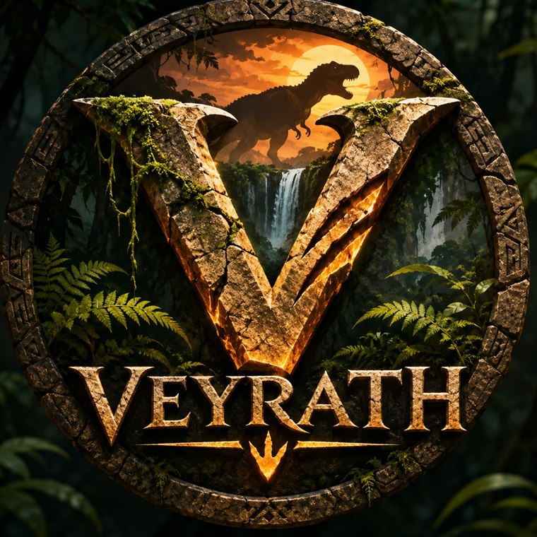
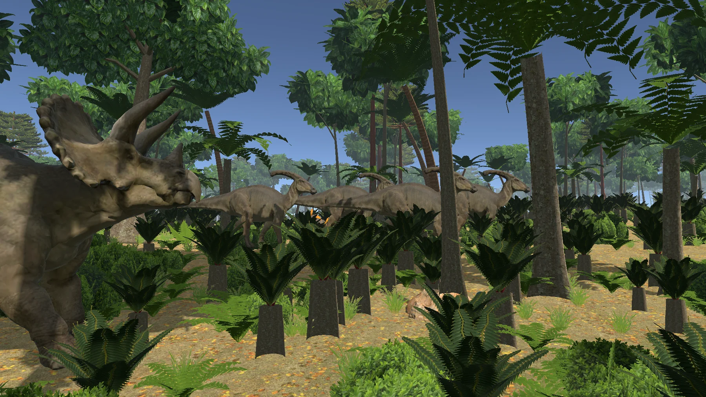
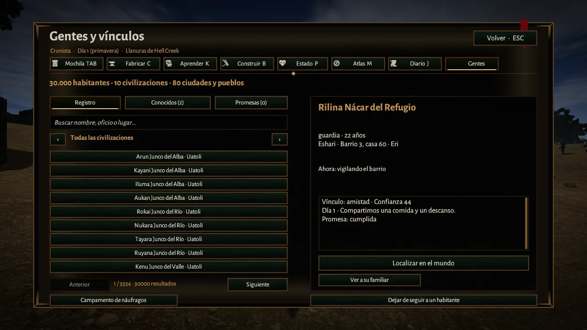
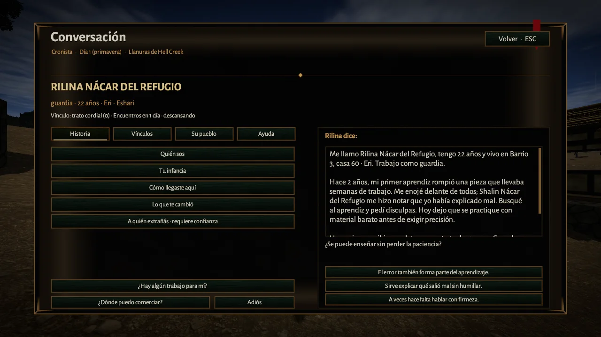

Dinosaurios en los datos
De terópodos a saurópodos, ya registrados en los datos del juego. La cuenta incluye pterosaurios y reptiles marinos; sus modelos 3D se suman por etapas.

Sobreviví. Explorá. Dejá tu historia.
Un sandbox de supervivencia prehistórica con 500 dinosaurios en sus datos, 30.000 habitantes con nombre e historia propia y diez civilizaciones que no esperan al jugador. Un proyecto independiente que sigue creciendo.
Entre bosques, costas, cuevas y ruinas olvidadas, cada excursión puede convertirse en un descubrimiento o en un peligro. La fauna responde a su temperamento; las personas, que son miles, tienen sus propios oficios, familias e intereses.
Veyrath busca combinar la tensión de la supervivencia con una historia que emerge de tus decisiones: aprender un oficio, construir un hogar, criar animales, ganarte la confianza de un pueblo o formar tu propio asentamiento.

CAPTURA DE DESARROLLOVE / 001Lo que ya forma parte de los datos de la versión 0.8.3 y lo que todavía falta escribir.
De terópodos a saurópodos, ya registrados en los datos del juego. La cuenta incluye pterosaurios y reptiles marinos; sus modelos 3D se suman por etapas.
Cada uno con nombre completo, edad, oficio, hogar, familia y amistades, repartidos entre diez civilizaciones.
Con territorio, relaciones, guerras, paces y reputación.
Tres ciudades y cinco pueblos por civilización, con mercaderes y encargos.
Infancia, familia, oficio, sueños, secretos y más. La confianza abre los más íntimos.
Criaturas del juego que podés girar en el bestiario de esta web.
Arranca el trabajo sobre Veyrath como proyecto independiente.
El juego está acomodando sus actualizaciones.
Más líneas de diálogo escritas para sus 30.000 habitantes.
Veyrath tiene 30.000 NPC persistentes: 3.000 por cada una de sus diez civilizaciones, repartidos entre 30 ciudades y 50 pueblos. Cada persona tiene nombre completo, edad, oficio, apariencia, hogar, familia y una amistad dentro del mismo registro.
Podés conversar con ellas, ganarte su confianza, compartir una comida, regalarles materiales para su oficio o prometer llevar un mensaje y volver con la respuesta. Desde Gentes se busca a cualquiera por nombre, oficio o lugar y se la ubica en el atlas.

Hoy las conversaciones combinan episodios escritos con los datos de cada habitante, así que muchas comparten estructura. La próxima gran meta es sumar muchísimas líneas de diálogo escritas para que cada charla suene distinta.
Es un objetivo a lograr, no una función terminada. Los avances se van a contar en la bitácora y en Discord.

Un primer vistazo al territorio de Veyrath. Explorá el mapa, ampliá sus regiones y descubrí los diferentes paisajes del continente.
Sistemas que se conectan entre sí. Estos son algunos de los pilares de Veyrath en la versión 0.8.3.
Observación, domesticación pacífica o por desmayo, monturas y cría.
JUGABLE EN LA 0.8.3Clima, necesidades básicas, alimentación, lesiones y curación.
JUGABLE EN LA 0.8.3Refugios, herramientas, ingeniería, herrería y agricultura.
JUGABLE EN LA 0.8.330.000 NPC, 80 ciudades y pueblos, mercaderes y diez civilizaciones dinámicas.
JUGABLE EN LA 0.8.3Qué se puede jugar hoy, qué está en desarrollo y cuáles son las metas que todavía hay que lograr.
Estados según el desarrollo de la versión 0.8.3. «Jugable hoy» significa que está en la versión actual, no que se haya probado en todas las situaciones. Las metas y lo planificado para más adelante son objetivos, no promesas.
Un mundo para perderse.
Una historia para crear.
Los datos de Veyrath registran 500 dinosaurios. Acá podés explorar 183 modelos de criaturas que, según su desarrollador, ya forman parte del juego. Cada ficha abre una vista 3D giratoria del modelo real, extraída de sus archivos FBX.
* Los 500 corresponden a los datos del juego e incluyen pterosaurios y reptiles marinos; sus modelos se suman por etapas. Este catálogo web muestra los 183 FBX entregados, cuya integración en el juego fue confirmada por su creador. Los grupos son descriptivos. Las vistas 3D son estáticas, no reproducen las animaciones del juego y algunos modelos se muestran con un material neutro porque no traen la textura integrada.
Imágenes capturadas del juego. Criaturas, paisajes y construcciones reales de su desarrollo.
* Capturas de desarrollo. El aspecto final y las características pueden cambiar.
Veyrath lleva 2 años en desarrollo y está acomodando sus actualizaciones. Leé las notas de cada descarga antes de jugar.
Supervivencia con dinosaurios, 30.000 habitantes, civilizaciones y exploración, para Windows, Linux, macOS y Android. Es una versión en desarrollo: puede presentar errores y problemas de rendimiento.
VISITAR LA PÁGINA DE ITCH.IOMientras se acomodan las actualizaciones, algunos archivos de descarga pueden figurar con otra numeración: la versión vigente es la 0.8.3. La descarga se gestiona desde Itch.io; esta web no aloja el ejecutable.
Las versiones de Linux, macOS y Android se compilaron desde Windows y todavía no se probaron en esos sistemas. El equipo de referencia es el de pruebas del desarrollador: no equivale a requisitos mínimos garantizados.
Una guía compacta basada en el LEEME del juego. Los controles se pueden cambiar desde Opciones; también se juega con mando tipo Xbox o con pantalla táctil.
Notas y novedades de Veyrath: lo que trae cada versión y las metas que vienen.
Respuestas rápidas sobre el estado actual del proyecto, sus números y cómo colaborar con el desarrollo.
No. Lleva dos años en desarrollo y hoy está en la versión 0.8.3. Sus sistemas, su contenido y su rendimiento todavía pueden cambiar.
Porque el proyecto está acomodando sus actualizaciones. La versión vigente es la 0.8.3; mientras se ordena todo, algunos archivos de Itch.io pueden figurar con otro número.
Sí: son 30.000 habitantes persistentes, cada uno con nombre, edad, oficio, hogar, familia e historia, repartidos entre diez civilizaciones. No se mueven los 30.000 a la vez en pantalla: aparecen los que están cerca del jugador y el resto sigue su horario dentro del registro.
Los datos del juego registran 500 dinosaurios; la cuenta incluye también pterosaurios y reptiles marinos. Sus modelos 3D se suman por etapas: en esta web podés explorar 183.
Hoy cada habitante conversa sobre 18 temas, con historias que combinan episodios escritos con sus propios datos. Sumar un montón de líneas de diálogo nuevas es la próxima gran meta del proyecto: todavía no está en el juego.
En la página oficial de Veyrath en Itch.io, donde están las versiones públicas disponibles.
En Windows, Linux, macOS y Android (APK). La descarga de Windows es la más reciente; las de Linux, macOS y Android todavía no incluyen el mundo social y no se probaron en equipos reales. Para iPhone y iPad no hay una app instalable por ahora.
Hay un enlace local experimental para jugar en la misma red, todavía con limitaciones. El multijugador por Epic Online Services está en desarrollo.
Unite al Discord de Veyrath para compartir sugerencias, comentar novedades y reportar problemas.
Seguí los avances, probá las actualizaciones y acompañá a Veyrath en su camino hacia las próximas metas. Las sugerencias y los reportes de errores son bienvenidos en Discord.
Visitá los canales oficiales para seguir las nuevas versiones. El enlace de Itch.io puede ofrecer descargas según el estado de publicación.